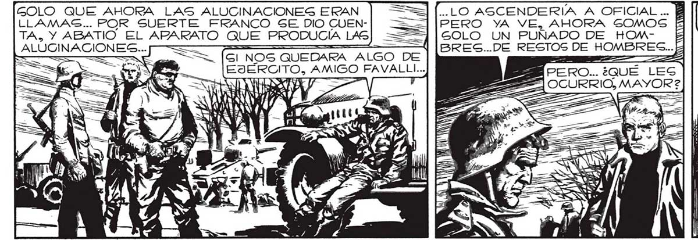
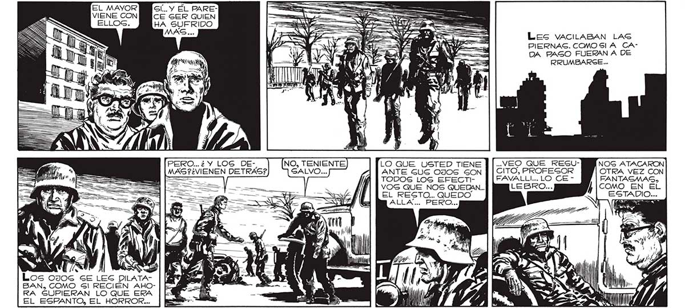

GÍí.. Y ÉL PARECE SER QUIEN HA SUFRIDO MAS PERO. 2 Y LOS DEMAS ?¿VIENEN DETRAS? UY ye . : Los o0J0s SE LES DILATABAN, COMO Gl RECIÉN AHORA GUPIERAN LO QUE ERA EL ESPANTO, EL HORROR... GOLO QUE AHORA LAS ALUCINACIONES ERAN LLAMASG.. POR SUERTE FRANCO SE DIO CUENTA, Y ABATIO EL APARATO QUE PRODUCIA LAG ALUCINA ==> ÓÁAAAAASAAA o , == BRECG..DE RESTOS DE HOMBRES...E Les vaciLABAN LAS PIERNAS. COMO SIA CADA PASO FUERAN A DE RRUMBARCE... a / E ON ur LO QUE USTED TIENE ANTE GUS OJOS SON TODOS LOS EFECTIVOS QUE NOS QUEDAN... COMO EN EL EL RESTO... QUEDO ESTADIO... ALLA... PERO... ros e” .. VEO QUE RESGUCITO, PROFEGOR NOS ATACARON FAVALL!... LO CE OTRA VEZ CON FANTAGMAG, ..LO ASCENDERÍA A OFICIAL ... B PERO YA VE, AHORA SOMOS tf SOLO UN PUÑADO DE HOMTODO EMPEZO CUANDO TRATAMOS DE EVACUARN LA PLAZA, BAJO LA PRESION DE LO QUE | CREAMOS ERAN LLAMAS... U ES a ES = “Wo ' = 7 | 1) Y) | lv 4 / A 203

